<!DOCTYPE html>
<html lang="en">
<head>
    <meta charset="UTF-8">
    <meta name="viewport" content="width=device-width, initial-scale=1.0, shrink-to-fit=no">
    <meta http-equiv="X-UA-Compatible" content="ie=edge">
    <link rel="stylesheet" href="css/style.css">
    <title>web_poster</title>
</head>
<body>
    <main>
        <div class="bg">
        </div>
        <header>
               <div id="scene">
                 
                 
                 
                 
                 
               </div>
        </header>
        <section class="description">
          <h1>Начни доверять себе</h1>
          <h1>Смотри в обе пары глаз</h1>
          <h1>Используй «Взгляд»</h1>
             <div class="button">
                 <a href="#" class="button">Узнать больше</a>
             </div>
        </section>
        <section>
            <div class="paragraph_1">
                <h2>Смотрите, но не видите? Желаете обозревать больше? Есть решение!</h2>
            </div>
            <div class="paragraph_2"
                <p>«Взгляд» — это оболочка для глаз, надевая которую человек получает возможность видеть, например, сзади, при закрытых глазах, в темноте, при ярком свете. «Взгляд» также повышаeт чувствительность человека: если ему грозит опасность, он почувствует это, тем самым, возможно, спасет себе жизнь.</p>
            </div>
            <div class="paragraph_3">
                <h3>Как это работает?</h3>
            </div>
            <div class="paragraph_4">
                <p>Вам нужно надеть «Взгляд», будто линзы.<br>Так происходит чудо!</p>
            </div>
            <div class="paragraph_5">
                <h3>Это безопасно?</h3>
            </div>
            <div class="paragraph_6">
                <p>Конечно! Все материалы, используемые во «Взгляде», имеют регистрационные удостоверения Минздрава и европейские сертификаты качества. Мы используем только гипоаллергенные и проверенные временем расходники для протезирования.</p>
            </div>
            <div class="paragraph_7">
                Где и как я смогу приобрести это?
            </div>
            <div class="paragraph_8">
                будни 8:00-22:00<br>выходные 9:00-18:00<br>обед 13:00-14:00<br>25/11/2018<br>Обновление Арбата, бизнес-центр<br>Российская Федерация,г. Москва,<br>ул. Новый Арбат, 21<br>119019<br>ст. метро Смоленская<br>+74953630979<br>+79852443357<br>www.взгляд.ru<br>www.newarbat.ru<br>secretary@newarbat.ru<br>annetekat@mail.ru<br>при поддержке Российского фонда фундаментальных исследований<br>www.rfbr.ru<br>действует наличный/безналичный расчет
            </div>
        </section>
    </main>
    <div class="image-container">
        
        <div class="after">picture_1</div>
    </div>
    <footer class="cnt">
            <ul class="nav.cnt">
                <li>«Взгляд»</li>
                <li>Обновление Арбата, бизнес-центр,</li>
                <li>Российская Федерация, г. Москва,</li>
                <li>ул. Новый Арбат, 21</li>
                <li>+74953630979,</li>
                <li>+79852443357,</li>
                <li>
                    <a href="#">secretary@newarbat.ru</a>
                </li>
                <li>© 2018 - 2019 Moskow, Russia.</li>
                <li>При поддержке Российского фонда фундаментальных исследований</li>
                <li>www.rfbr.ru</li>
            </ul>
        <p class="info">...и вот это видел?</p>
    </footer>

    <script type="text/javascript" src="js/jquery-3.3.1.min.js"></script>
    <script type="text/javascript" src="js/scripts.js"></script>
    <script src="js/parallax.js"></script>
    <script type="text/javascript">
      var scene = document.getElementById('scene');
      var parallaxInstance = new Parallax(scene);
    </script>

</body>
</html>
